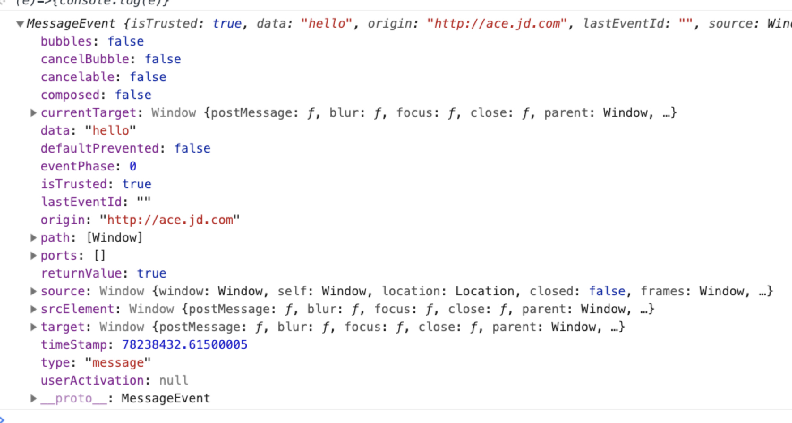

浏览器标签之间通信的几种方式
postmessage
第一种考虑的是postMessage ，方法可以安全地实现跨源通信
预备属性值
window.opener返回打开当前窗口的源窗口的引用，如果当前窗口不是由其他窗口打开的，则返回null1
window.opener
window.parent返回当前窗口的父窗口对象，一般用在iframe对嵌入它的父窗口引用上，若无父窗口返回自身引用1
window.parent
window.top当前窗口的最顶层窗口1
window.top
window.frameElement返回嵌入当前窗口的iframe对象1
window.frameElement
window.frameElement 返回嵌入窗口的元素，如果未嵌入窗口，则返回null1
window.frameElement
window.frames 返回当前窗口中所有子窗体的数组1
window.frames
通信方法
发送窗口引用目标窗口使用
postmessage,目的是用来触发目标窗口message的监听事件1
originWindow.postMessage(message, targetOrigin, [transfer]);
窗口通信接受方使用
onMessage1
2
3originWindow.onmessage = (event)=>{
console.log(event)
}
messageEvent的值打印如下：

获取目标窗口常用的方法
- 引用父窗口
window.parent - 引用打开源窗口
window.opener - 引用打开源窗口
window.top - 监听
message事件，回调参数的source字段 - 直接
open新窗口的值 window.frames获取子框架集合
1 | // http://origin.com |
使用注意:
使用postMessage将数据发送到其他窗口时，始终指定精确的目标origin，而不是*；接收消息时候要验证当前消息的source来源。否则可能会导致引起跨站点脚本攻击。
localstorage
第二种考虑的是localstorage，之所以用这个是因为无意中发现storage也是可以监听的，这样的话就可以通过监听当前同源的storage实现同源不同标签之间的通信刷新。
调用localStorage.setItem()触发事件，但是在当前事件监听页面用此方法是不能触发事件的，必须在不同的同源标签页面，且两次更新的值不变也不会触发事件。
监听事件1
2
3window.onstorage = (e) => {console.log(e)}
// or
window.addEventListener('storage', (e) => console.log(e))
触发事件1
localStorage.setItem('key','value')
cookie
还有能想到的前端实现通信的方法是使用cookie,本质上和storage是一回事，但是没有监听方法，唯一的可以实现通信的方式就是定时器轮询cookie是否更新，而且cookie也同样受限制于同源种cookie,每次发送请求携带多余的cookie增加通信负担，是一种比较低效的不推荐的方式。
原创内容，欢迎交流转载请注明出处
- 本文链接：http://aszero.com/2019/08/31/浏览器标签之间通信的几种方式/
- 版权声明：aszero